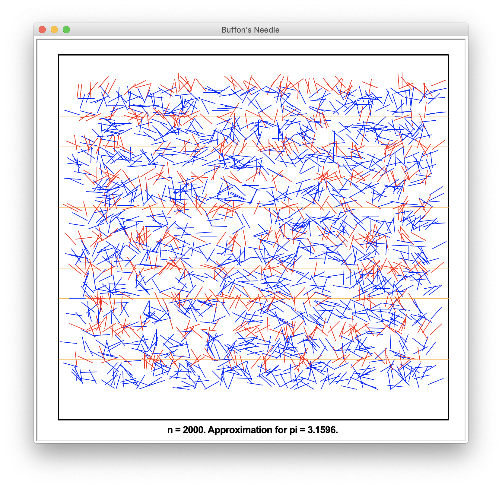

CS:1210:0AAA
Computer Science I: Fundamentals
Summer 2019
The University of Iowa
The College of Liberal Arts and Sciences
Department of Computer Science

HW 09 — Buffon's Animation
In Homework Assignment HW 08 you wrote a program to estimate the value of pi using a simulation of Buffon's Needle experiment. For this assignment you are to rewrite that program so that the simulation includes graphics. Your simulation should produce a picture similar to the one shown below. Here are some things to note about the picture:
- The window title has been set to "Buffon's Needle".
- The lined page contains a black border that is slightly thicker than the rest of the lines.
- The page lines are orange.
- Needles that hit a line are red and needles that don't hit a line are blue.
- The message is centered and is outside of the drawn border.
- The approximation of pi is displayed to two decimal places.
Your program should use the turtle module to get the number of needle drops from the user.

Grading
Please review the Grading Rubric for Programming Assignments. Also, please remember to include the header information at the beginning of your program.
What to Turn In
A Dropbox Folder has been created for this assignment in ICON. Please submit your Python program through ICON using that folder.